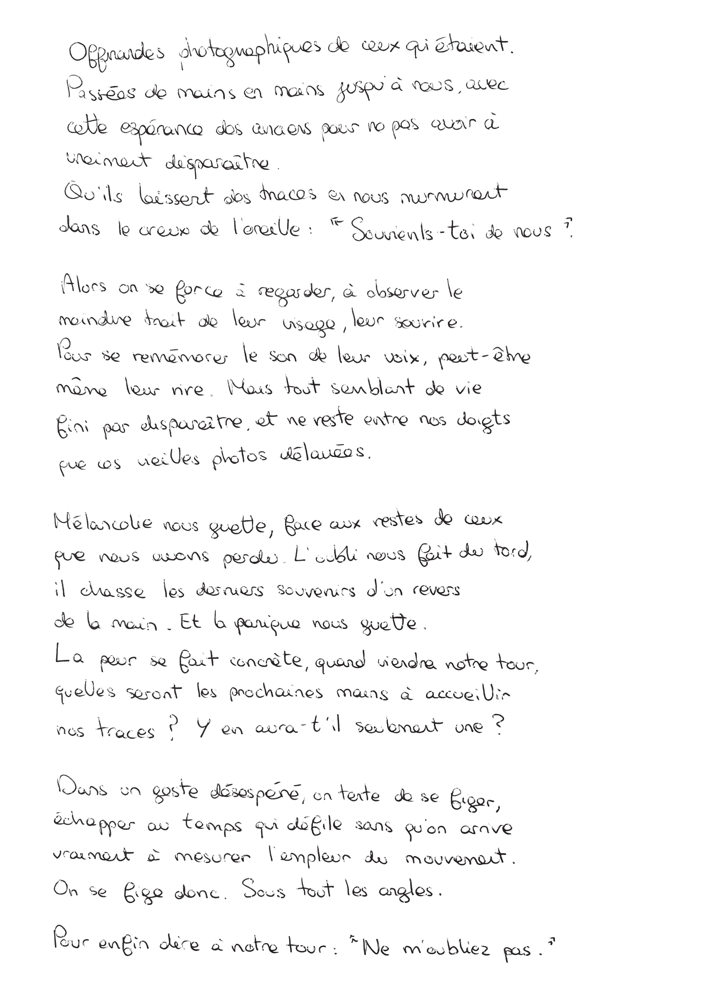
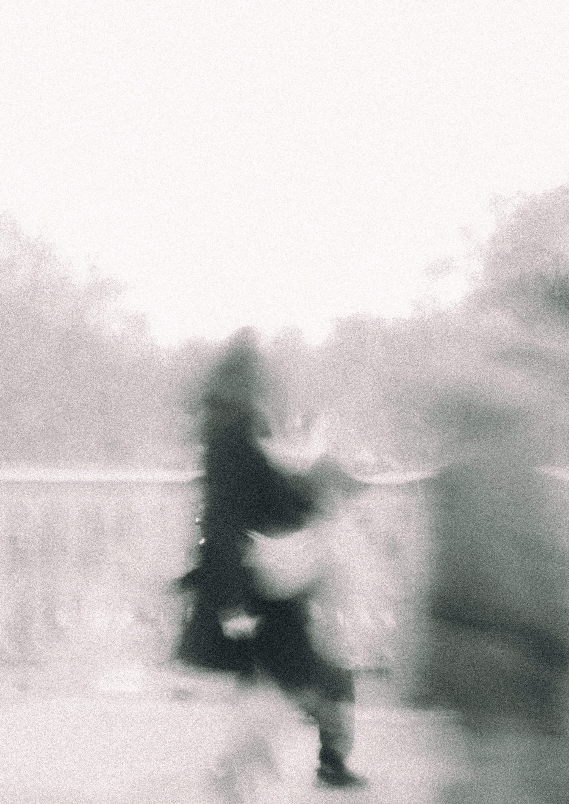
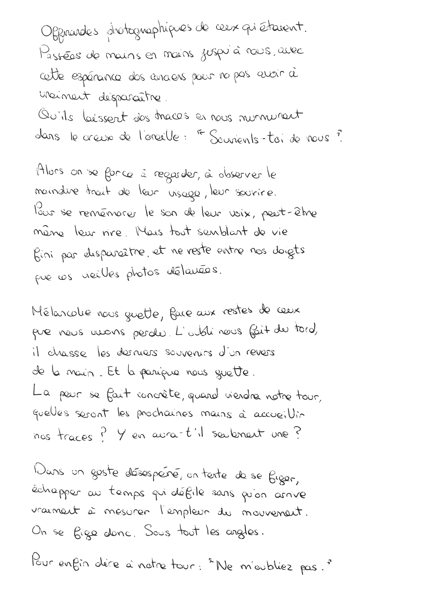
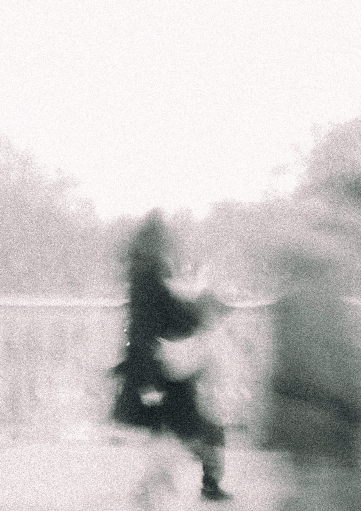

Ne m'oubliez pas
NE M'OUBLIEZ PAS
Travail photographique et éditorial autour de l’oubli, plus
précisément de la peur d’être oublié et en quoi la photographie
a son rôle à jouer. Comment permet-elle de laisser une trace ou
d’agir comme un memento sur ce passé oublié ?
Ce sont des portraits éthéréS, j’essaye de figer quelque chose
d’aussi monumental que le souvenir, la mémoire.
La couverture fait référence au livre « Mémoire » de Guy Debord,
en utilisant du papier de verre. Cela vient marquer l’effacement,
mettre en avant l’idée de se souvenir en détruisant et cela
installe donc une tension entre la mémoire et l’oubli.
2026
 


